Chapter 6 연속형 변수의 선형관계 추정
상관분석과 회귀분석의 의미
상관분석: 두 변수들 사이의 선형적 상관관계의 정도를 보는 것
회귀분석: 회귀식을 구하여 독립변수(\(x\))를 통해 종속변수 \(y\)의 값을 예측하는 것
\[ y=\beta_0 + \beta_1 x_1 + \cdots + \beta_p x_p \]
6.1 상관분석(Correlation analysis)
6.1.1 상관분석
- 수치형 변수들 간 선형적 연관성을 분석
- 상관관계를 인과성으로 결론짓지 않도록 주의!
- 모수적 상관분석(pearson’s r)
- 두 연속형 자료 중 적어도 한 개는 정규성을 갖는다는 가정을 전제(표본크기가 30 이상이라면 중심극한정리에 의해 정규성 검정 없이도 모수적 상관분석 가능)
- 비모수적 상관분석(Spearman’s rho(\(\rho\)), Keandall’s tau(\(\tau\))-b)
- 표본크기가 작고 정규분포를 가정할 수 없는 연속형 자료인 경우, 순위 척도를 분석에 포함하는 경우
Pearson의 상관분석(모수적 방법)
- 가설
- 귀무가설: 두 변수는 선형의 관계가 없다(\(r=0\))
- 대립가설: 두 변수는 선형의 관계가 있다(\(r \ne 0\))
- Pearson의 상관계수: -1 ~ 1 사이의 값
\(r=1\) or \(r=1\): 한 변수를 알 때 다른 변수의 값을 100% 정확히 알 수 있음을 의미(\(r\)이 0에 가까울수록 두 변수의 관계는 선형적인 관계가 없다고 해석)
상관계수(\(r\)) \(\ne\) 직선의 기울기(\(r\)은 오로지 상관의 정도만 의미)
\(r=1\) 이더라도 실제 기울기가 작으면 \(x\) 변수가 \(y\) 변수에 대해 큰 영향을 미친다고 보기는 어려움
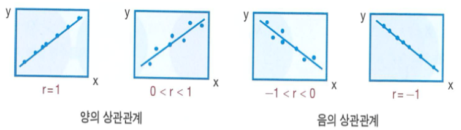
- 설명력 \(r^2\)
- 두 변수 사이의 선형 관계의 정도를 설명
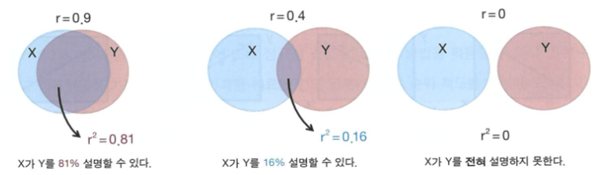
- 편상관분석
- 관심을 갖는 두 변수 외 나머지 변수들이 모두 동일한 값으로 통제(adjusted)되었다고 가정하여, 두 변수 사이의 순수한 연관성의 정도를 평가
- 예시: 허리둘레와 혈압은 서로 64%정도 설명해 주지만, 나이에 의한 영향을 통제하였을 때 허리둘레와 혈압은 서로 25%를 설명하고 있다.
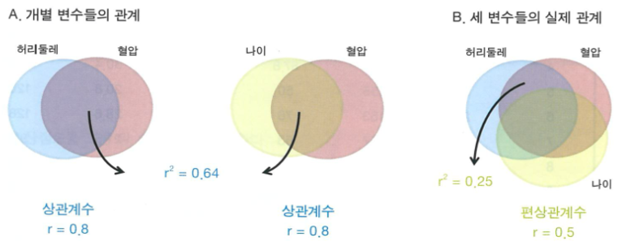
허리둘레와 BMI의 상관분석 예시
- 그래프
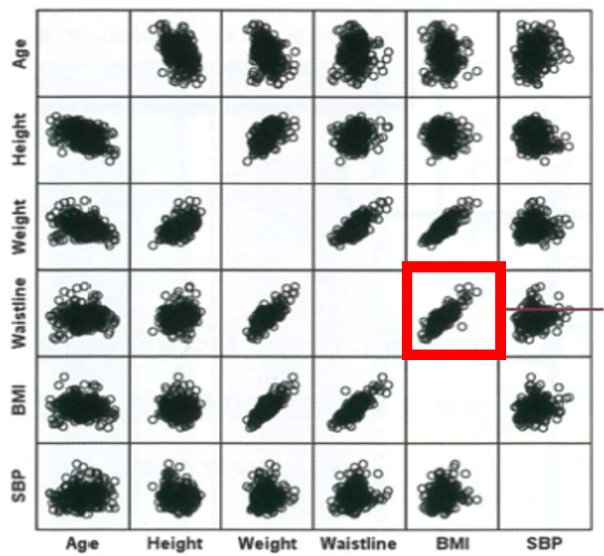
산점도를 통해 허리둘레의 BMI는 강한 양의 상관관계가 있을 것으로 보임
- Pearson’s 상관계수
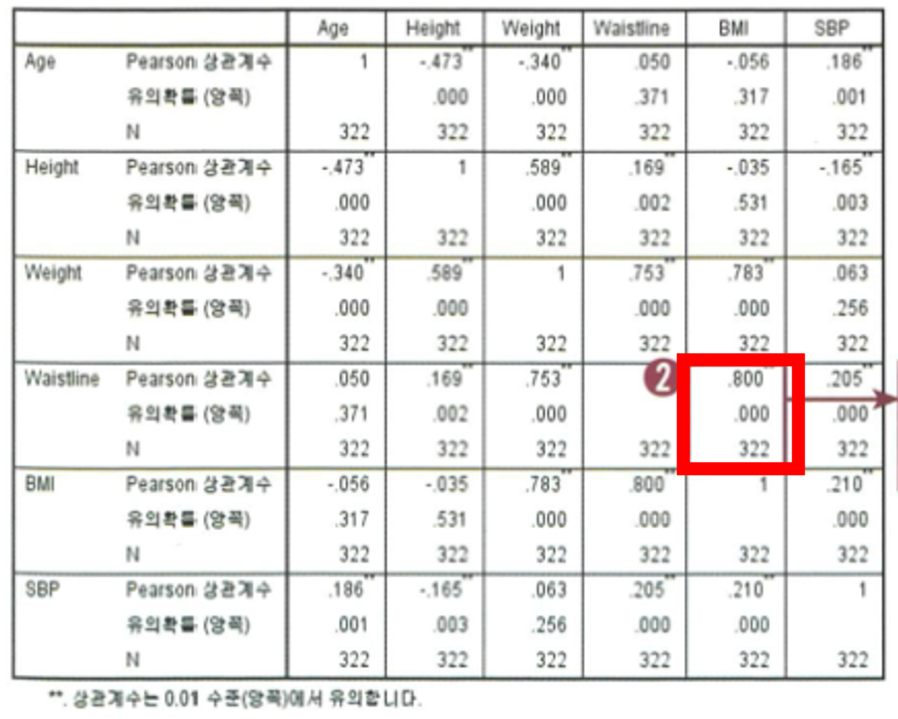
허리둘레와 BMIㄴ의 상관계수 \(r=0.8\)로 유의확률 \(p<0.001\)로 통계적으로 유의하게 연관을 보임
- 편상관계수
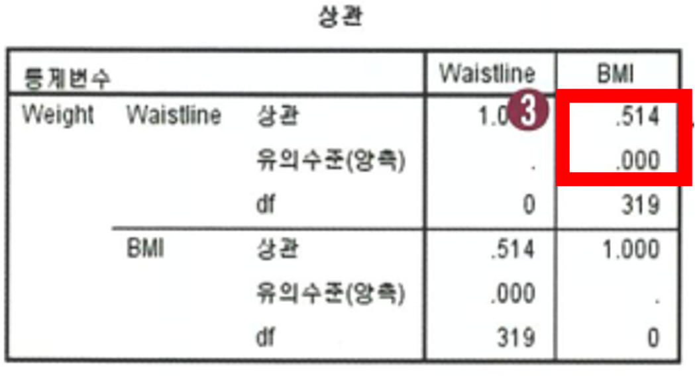
- 몸무게가 일정하다고 할 때 허리둘레와 BMI의 편상관계수는 \(r=0.514\)로 통계적으로 유의한 연관성이 있다고 말할 수 있음(\(p<0.001\))
6.1.2 Spearman의 순위상관분석(비모수적 방법)
- 표본수가 적고 정규성을 만족하지 않는 두 연속형 변수 혹은 순위척도 사이의 상관관계를 추정 및 검정
- 선형적 연관성 검정 X -> “한 변수(X)가 증가할 때 다른 변수(Y)도 증가하는 경향이 있느냐”에 관한 상관성 검정
- 짝지어진 두 변수(X,Y)를 각각 순위를 매긴 뒤 그 순위의 차를 통해 두 변수의 상관관계 검정
- 만약, 짝지어진 두 변수의 순서가 완전히 같다면 순위 차(d)는 모두 0이고 \(\rho=1\)
- 가설의 형태
- 귀무가설: 두 변수는 독립이다.
- 대립 가설: 두 변수는 독립이 아니다(상관성이 있다)
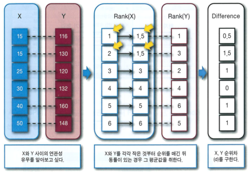
6.1.3 R 예제
6.1.3.2 파일불러오기 및 데이터 관찰
healthdata<-read.csv('data/6_correlation_and_regression.csv', header=T)
str(healthdata)## 'data.frame': 322 obs. of 6 variables:
## $ age : int 57 25 57 43 52 27 48 45 38 69 ...
## $ height : num 164 172 157 170 155 ...
## $ weight : num 62 54 59 87.8 50 76 53 72 65.8 56 ...
## $ waistline: num 85 65 83 104 83 83 75 93 71 94 ...
## $ BMI : num 23.1 18.3 23.9 30.4 20.8 28.6 21.5 26.8 21.6 23.9 ...
## $ SBP : int 147 116 122 130 120 128 97 145 110 170 ...attach(healthdata)
6.1.3.4 상관분석
cor(healthdata, use="pairwise.complete.obs") ## age height weight waistline BMI
## age 1.00000000 -0.47336360 -0.34049591 0.05003146 -0.05581894
## height -0.47336360 1.00000000 0.58858828 0.16948372 -0.03486425
## weight -0.34049591 0.58858828 1.00000000 0.75324679 0.78320296
## waistline 0.05003146 0.16948372 0.75324679 1.00000000 0.80066003
## BMI -0.05581894 -0.03486425 0.78320296 0.80066003 1.00000000
## SBP 0.18612058 -0.16458514 0.06343363 0.20513749 0.21025032
## SBP
## age 0.18612058
## height -0.16458514
## weight 0.06343363
## waistline 0.20513749
## BMI 0.21025032
## SBP 1.00000000cor.test(BMI,waistline)##
## Pearson's product-moment correlation
##
## data: BMI and waistline
## t = 23.906, df = 320, p-value < 2.2e-16
## alternative hypothesis: true correlation is not equal to 0
## 95 percent confidence interval:
## 0.7576655 0.8367351
## sample estimates:
## cor
## 0.80066cor.test(BMI,weight)##
## Pearson's product-moment correlation
##
## data: BMI and weight
## t = 22.533, df = 320, p-value < 2.2e-16
## alternative hypothesis: true correlation is not equal to 0
## 95 percent confidence interval:
## 0.7369932 0.8221252
## sample estimates:
## cor
## 0.783203cor.test(weight,waistline)##
## Pearson's product-moment correlation
##
## data: weight and waistline
## t = 20.486, df = 320, p-value < 2.2e-16
## alternative hypothesis: true correlation is not equal to 0
## 95 percent confidence interval:
## 0.7017200 0.7969347
## sample estimates:
## cor
## 0.75324686.1.3.5 체중영향을 통제한 허리둘레-BMI 편상관분석
#install.packages('ppcor')
library(ppcor)## 필요한 패키지를 로딩중입니다: MASSpcor.test(waistline, BMI, weight)## estimate p.value statistic n gp Method
## 1 0.5152468 3.64479e-23 10.73763 322 1 pearson6.1.3.6 파일불러오기 및 데이터 관찰
healthdata<-read.csv('data/6_spearman.csv', header=T)
str(healthdata)## 'data.frame': 6 obs. of 2 variables:
## $ Age: int 15 15 25 30 40 50
## $ SBP: int 116 130 120 132 160 148attach(healthdata)## The following object is masked from healthdata (pos = 5):
##
## SBP6.1.3.7 상관분석
cor(healthdata, use="complete.obs", method = "spearman")## Age SBP
## Age 1.000000 0.840668
## SBP 0.840668 1.000000cor.test(Age,SBP, method = "spearman")## Warning in cor.test.default(Age, SBP, method = "spearman"): Cannot compute exact
## p-value with ties##
## Spearman's rank correlation rho
##
## data: Age and SBP
## S = 5.5766, p-value = 0.03606
## alternative hypothesis: true rho is not equal to 0
## sample estimates:
## rho
## 0.840668cor(healthdata, use="complete.obs", method = "kendall")## Age SBP
## Age 1.0000000 0.6900656
## SBP 0.6900656 1.0000000cor.test(Age,SBP, method = "kendall")## Warning in cor.test.default(Age, SBP, method = "kendall"): Cannot compute exact
## p-value with ties##
## Kendall's rank correlation tau
##
## data: Age and SBP
## z = 1.9127, p-value = 0.05578
## alternative hypothesis: true tau is not equal to 0
## sample estimates:
## tau
## 0.69006566.2 회귀분석(Regression analysis)
목적: 독립변수(X)와 종속변수(Y)가 선형의 관계에 있을 때, 선형회귀식을 추정 - 종속변수는 반드시 수치형 변수일 것
단순 회귀분석(simple regresison anlaysis): 단 하나의 독립변수
\[ y=\beta_0 + \beta_1 x_1 +\epsilon \]
여기서 \(\beta_0\): \(x=0\)일때 \(y\)의 평균, \(\beta_1\): \(x\)의 값이 1단위 증가할 때 \(y\)의 평균적인 증가량
- 다중 회귀분석(multiple regression anlaysis): 여러 개의 독립변수
\[ y=\beta_0 +\beta_1x_1 +\cdots +\beta_px_p \]
- 오차항 및 잔차의 의미
- 오차항(error): 모집단에서 실제값과 회귀선 사이의 차이
- 잔차(residual): 표본집단에서 관측값과 회귀선에 의한 예측값 사이의 차이
- 표본집단을 분석하는 회귀분석에서는 모집단의 오차항을 직접 관찰할 수 는 없으므로 잔차를 사용
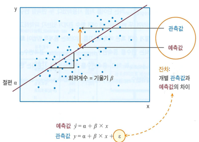
회귀모형에 대한 기본 가정
- 선형성: 독립변수(X)와 종속변수(Y)는 선형관계 - 산점도로 확인
- 오차항의 정규성: 모든 독립변수(X)의 값에서 종속변수(Y)는 정규분포를 이룸 - 정규 Q-Q 도표로 확인
- 오차항의 독립성: 개별 잔차들은 서로 독립 - 잔차산점도, Durbin-Watson 통계량으로 확인
- 오차항의 등분산: 모든 독립변수(X)의 값에서 종속변수(Y)는 등분산 - 잔차산점도로 확인
- 선형성
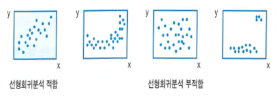
- 오차항의 정규성
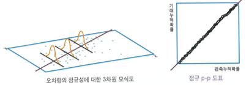
- 오차항의 독립성/등분산성
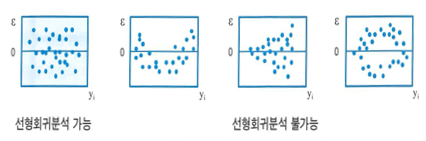
- 독립: 잔차들이 불규칙한 분포를 보임
- 등분산: 모든 독립변수(X)에 대해 잔차의 분산이 같음
6.2.1 단순회귀분석(simple regression analysis)
- 단순회귀분석의 시행 - 분석 시행에 앞서 산점도로 선형관계를 먼저 확인
- Step 1: 회귀식(\(y=\alpha+\beta X\)) 추정
- 최소제곱법: (잔차)\(^2\)의 합이 최소가 되는 회귀식을 추정. (즉, \(\alpha\), \(\beta\))
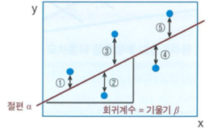
- Step 2: 결정계수 \(R^2\)(회귀방정식의 설명력 평가)
- 종속변수(y)의 값을 \(y=\alpha+\beta X\)의 회귀식으로 추정
- 실제 y값의 총변동: 1) 회귀식으로 설명 가능한 변동, 2) 그 외 설명되지 않는 변동(잔차에 의한 값)
- 결정계수(\(R^2\))가 클수록 회귀직선이 잘 추정되었다고 판단 가능
- Step 3: 회귀식(\(y=\alpha+\beta X\))의 통계적 유의성(적합도) 검정
분산분석표(F검정)를 이용하여 검정
가설
- 귀무가설: 회귀모형(\(y=\alpha+\beta X\))으로 설명할 수 없다.
- 대립가설: 회귀모형(\(y=\alpha+\beta X\))으로 설명할 수 있다.
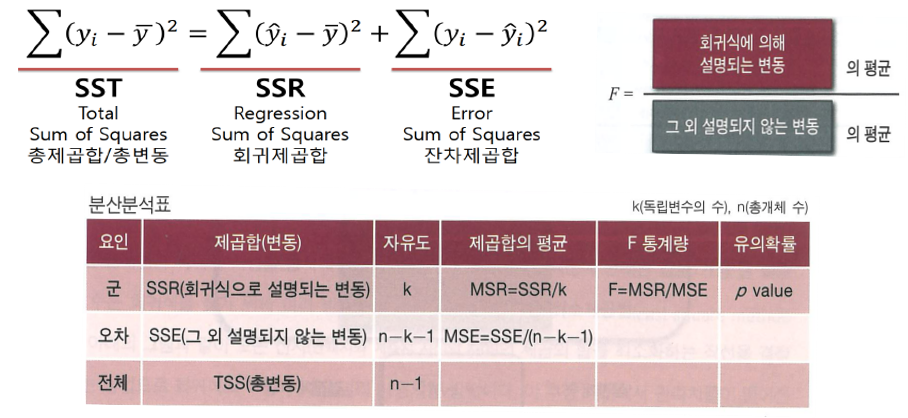
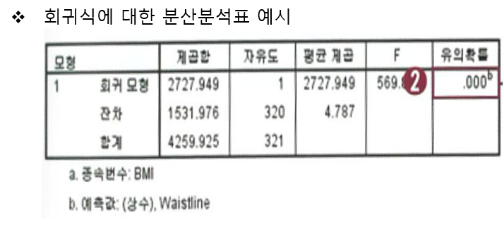
- Step 4: 회귀계수(\(\beta\))의 통계적 유의성 검정
- \(t\) 분포를 이용하여 검정
- 단순회귀분석: 회귀식의 검정과 회귀계수의 검정이 실제로 같은 과정을 볼 수 있음
- 다중회귀분석: 회귀식의 유의성을 검정한 다음 개별 독립변수들의 회귀계수를 각각 검정
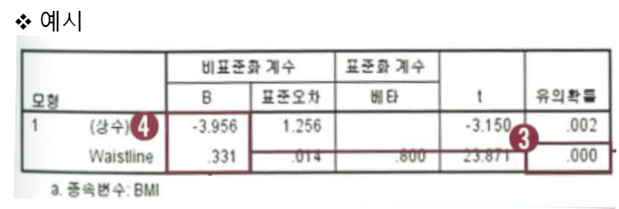
- Step 5: 회귀분석의 기본 가정 검정(오차항의 정규성, 독립성, 등분산성)
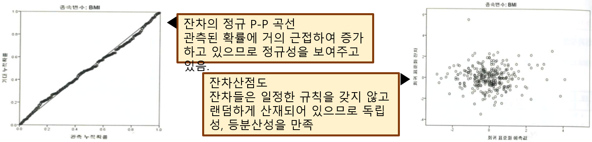
6.2.1.1 R 예제
6.2.1.1.1 단순회귀분석(BMI~waistline)
#파일불러오기 및 데이터 관찰 6_correlation_and_regression
healthdata<-read.csv("data/6_correlation_and_regression.csv")
attach(healthdata)## The following object is masked from healthdata (pos = 3):
##
## SBP## The following objects are masked from healthdata (pos = 6):
##
## age, BMI, height, SBP, waistline, weight
6.2.1.1.3 회귀분석시행(BMI~ waistline)
myresult=lm(BMI~waistline)
summary(myresult)##
## Call:
## lm(formula = BMI ~ waistline)
##
## Residuals:
## Min 1Q Median 3Q Max
## -7.5197 -1.3087 -0.0444 1.2532 12.0683
##
## Coefficients:
## Estimate Std. Error t value Pr(>|t|)
## (Intercept) -3.97611 1.25481 -3.169 0.00168 **
## waistline 0.33135 0.01386 23.906 < 2e-16 ***
## ---
## Signif. codes: 0 '***' 0.001 '**' 0.01 '*' 0.05 '.' 0.1 ' ' 1
##
## Residual standard error: 2.186 on 320 degrees of freedom
## Multiple R-squared: 0.6411, Adjusted R-squared: 0.6399
## F-statistic: 571.5 on 1 and 320 DF, p-value: < 2.2e-16anova(myresult)## Analysis of Variance Table
##
## Response: BMI
## Df Sum Sq Mean Sq F value Pr(>F)
## waistline 1 2731.7 2731.67 571.51 < 2.2e-16 ***
## Residuals 320 1529.5 4.78
## ---
## Signif. codes: 0 '***' 0.001 '**' 0.01 '*' 0.05 '.' 0.1 ' ' 1par(mfrow=c(2,2))
plot(myresult)
6.2.2 다중회귀분석
하나의 독립변수로 종속변수를 예측하기 어려우며 교란변수에 대한 고려 없이 종속변수와 독립변수를 1:1로 짝지어서 여러 개의 단순회귀식을 구하는 것은 의미가 없음
여러 독립변수 사이의 영향을 모두 함께 고려하여 종속변수를 설명하는 최적의 회귀모형을 하나의 식으로 추정하는 것을 다중회귀분석(multiple regression analysis) 혹은 중회귀분석이라 함
다중회귀분석의 목적
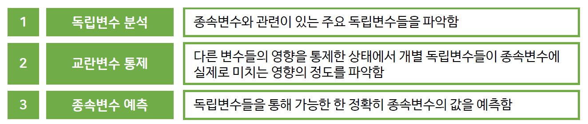
- 다중회귀분석의 형태
\[ y_i =\beta_0 +\beta_1 x_{1i}+\beta_2 x_{2i} +\cdots +\beta_p x_{pi} + \epsilon_i, \,\,\, \epsilon_i \sim N(0, \sigma^2), \,\,\, i=1,\ldots ,n \]
\(\beta_0\): 절편(intercept), \(\beta_j, \,\,\, j=1,\ldots, p\): 설명변수에 대한 회귀 계수
- 다중회귀분석의 가정
- 다중회귀분석은 기본적으로 단순회귀분석과 동일한 가정을 바탕으로 함
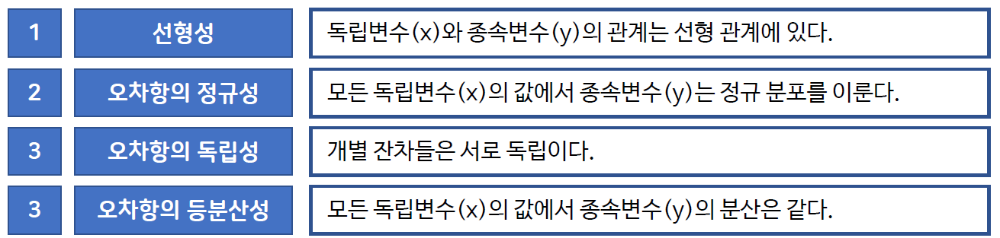
- 다중회귀분석도 단순회귀분석과 동일한 절차에 의해 시행된다.
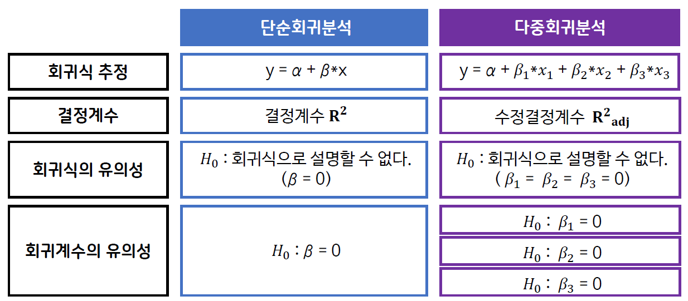
- Step 1: 회귀식의 추정
- 최소제곱법을 통해 잔차의 제곱 합을 최소화하는 회귀식을 설정함
- Step 2: 수정된 결정계수 \(R^2_{adj}\)
- 일반적으로 \(R^2\)이 클수록 회귀식은 높은 설명력을 가지지만, \(R^2\)을 약간 증가시키기 위해 모든 독립변수를 추가시키는 것이 꼭 옳은 것은 아님
- 수정된 결정계수 \(R^2_{adj}\)은 이런 점을 고려하여 \(R^2\)을 표본의 크기와 독립변수의 수로써 조정한 것으로 \(R^2\)보다 작은 값을 가짐
- 새로 포함되는 독립변수에 의한 추가적인 설명력이 경미한 경우에는 \(R^2\)은 다소 증가하더라도 \(R^2_{adj}\)은 오히려 감소할 수 있음
- Step 3: 회귀식의 유의성 검정
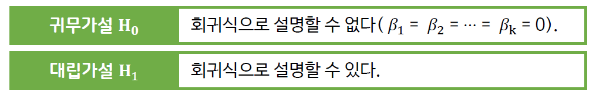
- 회귀식의 유의성은 단순회귀분석에서와 마찬가지로 F 검정을 이용하여 분산분석표로 표현됨
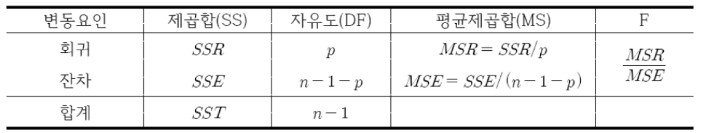
- Step 4: 회귀계수의 유의성 검정
- 전체 회귀식의 유의성이 검정되면 \(t\) 분포를 통해 개별 독립변수의 회귀계수가 유의한지 검정하며 \(p<0.05\)일 때, 해당 독립변수가 종속변수에 유의한 영향을 미친다고 판단함
표준화 회귀계수(Standardized beta coefficient)
- 회귀계수는 독립변수들의 단위에 크게 영향을 받기 때문에 회귀계수의 크기로 독립변수의 영향력을 직접 비교해서는 암됨
- 표준화 회귀계수는 독립변수들의 값들을 평균 0, 표준편차 1로 표준화해 계산해준 값으로 표준화 계수의 절대값을 비교한다면 가장 영향력이 큰 독립변수를 찾을 수 있음
6.2.2.1 회귀모형에 포함될 독립변수를 선택하는 방법
- 입력
- 선택된 모든 변수를 모형에 입력하는 방법으로 독립변수들의 영향을 전체적으로 파악할 수 있음
- 전진선택법(forward selection)
- 회귀계수의 유의확률이 가장 낮은 변수를 먼저 모형에 넣고, 남은 변수들 가운데 모형에 추가하였을 때, 유의확률이 가장 낮은 변수를 순서대로 하나씩 더해나가는 방법
- 한번 선택된 변수는 절대로 제거되지 않는다는 단점이 있음
- 후진선택법(backward elimination)
- 모든 변수를 회귀모형에 넣은 상태에서 출발하여 유의확률이 높은 변수부터 순서대로 하나씩 제거하여 유의한 변수들만 남을때까지 제거를 계속하는 방법
- 한번 제외된 변수는 다시 선택되지 못한다는 단점이 있음
- 단계선택법(stepwise selection)
- 전진선택법과 후진선택법의 방법을 섞어 놓은 방법
- 독립변수가 하나도 포함되지 않은 모형으로부터 출발하여 모형에 변수가 추가되었을 때 회귀계수의 유의확률이 가장 낮은 변수부터 순서대로 모형에 진입함
- 새로운 변수가 진입될 때마다 모형 내 모든 독립변수들의 유의확률을 재평가하여 유의성이 떨어지는 변수가 있으면 제거하고 다시 모형 밖의 변수들 가운데 더 포함시킬 변수가 있는지 검토함
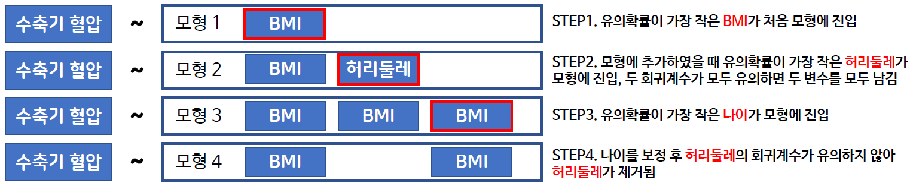
6.2.2.2 다중공선성
- 다중공선성(multicollinearity): 독립변수들 간에 완전한 또는 거의 완전한 선형의 종속관계가 존재하는 것을 의미함
- 다중공선성이 있는 경우, 회귀계수 추정량의 분산이 매우 커지게 되어 회귀계수의 유의확률도 큰 폭으로 증가하게 되므로 임상적으로 의미가 더 크고, 종속변수와 관련성이 더 높은 변수를 하나만 선택하여 모형에 투입해야 함
6.2.2.3 R 예제
6.2.2.3.1 자료입력 및 관찰
healthdata = read.csv("data/6_correlation_and_regression.csv",header=T)
attach(healthdata)## The following objects are masked from healthdata (pos = 3):
##
## age, BMI, height, SBP, waistline, weight## The following object is masked from healthdata (pos = 4):
##
## SBP## The following objects are masked from healthdata (pos = 7):
##
## age, BMI, height, SBP, waistline, weight정규성 검정
nor_all <- residuals(model_all)
shapiro.test(nor_all)##
## Shapiro-Wilk normality test
##
## data: nor_all
## W = 0.9768, p-value = 4.582e-05다중회귀분석의 결과 확인
summary(model_all)##
## Call:
## lm(formula = SBP ~ ., data = healthdata)
##
## Residuals:
## Min 1Q Median 3Q Max
## -43.449 -11.628 -1.081 9.635 64.919
##
## Coefficients:
## Estimate Std. Error t value Pr(>|t|)
## (Intercept) -19.3598 141.9737 -0.136 0.8916
## age 0.1899 0.1051 1.808 0.0716 .
## height 0.5913 0.8621 0.686 0.4933
## weight -1.0241 1.0141 -1.010 0.3133
## waistline 0.3231 0.2206 1.465 0.1440
## BMI 3.2248 2.7177 1.187 0.2363
## ---
## Signif. codes: 0 '***' 0.001 '**' 0.01 '*' 0.05 '.' 0.1 ' ' 1
##
## Residual standard error: 18.06 on 316 degrees of freedom
## Multiple R-squared: 0.09673, Adjusted R-squared: 0.08243
## F-statistic: 6.768 on 5 and 316 DF, p-value: 5.187e-066.2.2.3.3 후진선택법으로 다중회귀분석 시행
model_backward=step(lm(SBP~., data=healthdata), healthdata, direction="backward")## Start: AIC=1869.63
## SBP ~ age + height + weight + waistline + BMI
##
## Df Sum of Sq RSS AIC
## - height 1 153.53 103267 1868.1
## - weight 1 332.81 103446 1868.7
## - BMI 1 459.45 103573 1869.1
## <none> 103113 1869.6
## - waistline 1 700.11 103813 1869.8
## - age 1 1066.16 104179 1870.9
##
## Step: AIC=1868.11
## SBP ~ age + weight + waistline + BMI
##
## Df Sum of Sq RSS AIC
## <none> 103267 1868.1
## - waistline 1 673.29 103940 1868.2
## - age 1 1063.68 104330 1869.4
## - weight 1 1253.53 104520 1870.0
## - BMI 1 2310.05 105577 1873.2정규성 검정
nor_backward <- residuals(model_backward)
shapiro.test(nor_backward)##
## Shapiro-Wilk normality test
##
## data: nor_backward
## W = 0.97723, p-value = 5.509e-05
다중회귀분석의 결과 확인
summary(model_backward)##
## Call:
## lm(formula = SBP ~ age + weight + waistline + BMI, data = healthdata)
##
## Residuals:
## Min 1Q Median 3Q Max
## -43.368 -11.600 -1.212 9.972 65.881
##
## Coefficients:
## Estimate Std. Error t value Pr(>|t|)
## (Intercept) 77.7238 11.1234 6.987 1.66e-11 ***
## age 0.1897 0.1050 1.807 0.07171 .
## weight -0.3387 0.1727 -1.962 0.05068 .
## waistline 0.3166 0.2202 1.438 0.15152
## BMI 1.3957 0.5241 2.663 0.00814 **
## ---
## Signif. codes: 0 '***' 0.001 '**' 0.01 '*' 0.05 '.' 0.1 ' ' 1
##
## Residual standard error: 18.05 on 317 degrees of freedom
## Multiple R-squared: 0.09538, Adjusted R-squared: 0.08397
## F-statistic: 8.356 on 4 and 317 DF, p-value: 2.028e-066.2.2.3.4 단계선택법으로 다중회귀분석 시행
model_step=step(lm(SBP~., data=healthdata), healthdata, direction="both")## Start: AIC=1869.63
## SBP ~ age + height + weight + waistline + BMI
##
## Df Sum of Sq RSS AIC
## - height 1 153.53 103267 1868.1
## - weight 1 332.81 103446 1868.7
## - BMI 1 459.45 103573 1869.1
## <none> 103113 1869.6
## - waistline 1 700.11 103813 1869.8
## - age 1 1066.16 104179 1870.9
##
## Step: AIC=1868.11
## SBP ~ age + weight + waistline + BMI
##
## Df Sum of Sq RSS AIC
## <none> 103267 1868.1
## - waistline 1 673.29 103940 1868.2
## - age 1 1063.68 104330 1869.4
## - weight 1 1253.53 104520 1870.0
## - BMI 1 2310.05 105577 1873.2정규성 검정
nor_step <- residuals(model_backward)
shapiro.test(nor_step)##
## Shapiro-Wilk normality test
##
## data: nor_step
## W = 0.97723, p-value = 5.509e-05
다중회귀분석의 결과 확인
summary(model_step)##
## Call:
## lm(formula = SBP ~ age + weight + waistline + BMI, data = healthdata)
##
## Residuals:
## Min 1Q Median 3Q Max
## -43.368 -11.600 -1.212 9.972 65.881
##
## Coefficients:
## Estimate Std. Error t value Pr(>|t|)
## (Intercept) 77.7238 11.1234 6.987 1.66e-11 ***
## age 0.1897 0.1050 1.807 0.07171 .
## weight -0.3387 0.1727 -1.962 0.05068 .
## waistline 0.3166 0.2202 1.438 0.15152
## BMI 1.3957 0.5241 2.663 0.00814 **
## ---
## Signif. codes: 0 '***' 0.001 '**' 0.01 '*' 0.05 '.' 0.1 ' ' 1
##
## Residual standard error: 18.05 on 317 degrees of freedom
## Multiple R-squared: 0.09538, Adjusted R-squared: 0.08397
## F-statistic: 8.356 on 4 and 317 DF, p-value: 2.028e-06